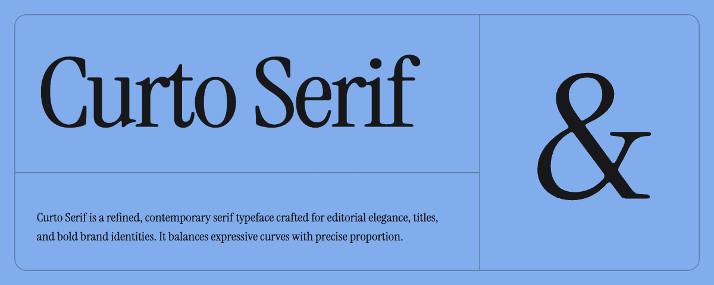
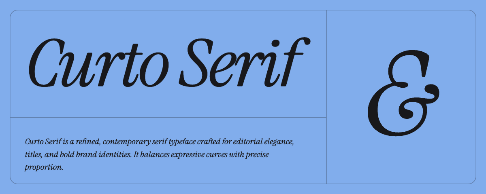

A refined, contemporary serif — now in four weights from Regular to Bold, in Roman and Italic, plus a continuous wght variable axis. This page previews every file in the beta folder.


Handgloves
The quick brown fox jumps over the lazy dog
Aa Gg Qq & Rr — 0123
Typography is the craft of endowing human language with a durable visual form. Curto Serif balances high-contrast detailing with a solid, even texture — comfortable for long reading at Regular, commanding at Black.
Aa Gg Qq & Rr — 0123
Posters, mastheads, covers and titles. At 600–700 the counters stay open and the joins hold, so heavier text keeps its shape at large sizes.
Aa Gg Qq & Rr — 0123
Bold Italic — an 11° slant keeps the rhythm of the upright while leaning forward.
ASCII, Latin-1, Latin Extended-A/B, Latin Extended Additional and Combining Diacritics. OpenType features: liga, dlig, ss01, case, ordn, locl, ccmp, aalt; kerning, marks and mkmk.
| File | Weight | Style | Format | Size |
|---|